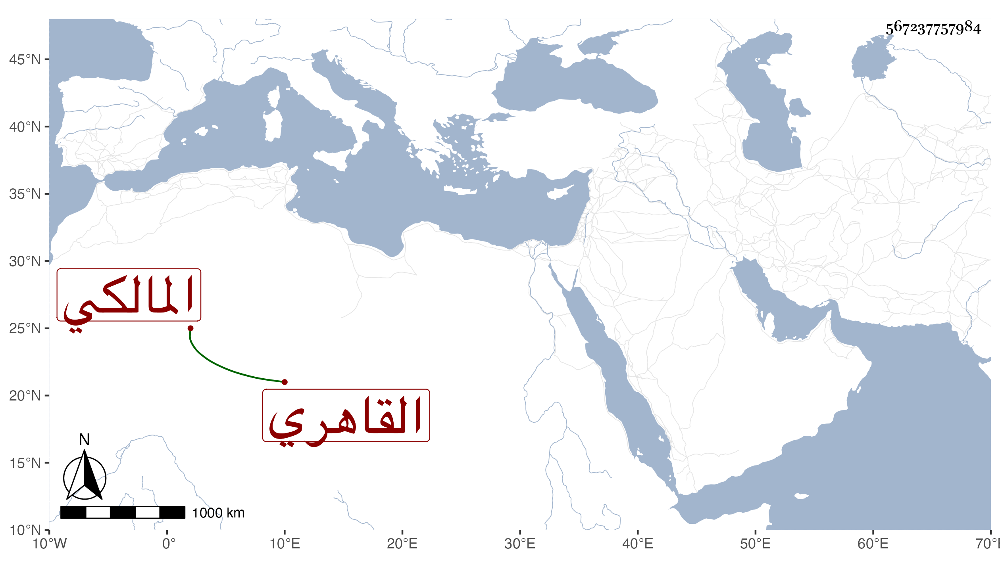

0902Sakhawi.DawLamic.ITO20230111-ara1.EIS1600.567237757984
Biography ID: 567237757984
1306
يونس بن إياس بن عبد الله القاهري المالكي نزيل الفخرية بين السورين . ولد كما رآه بخط أمه في جمادى الثانية سنة ست وثمانمائة وقال مما يحتاج إلى تحقيق في كثير منه أنه أخذ في الفقه عن الزينين عبادة وطاهر وفي العربية وغيرهما عن ابن الهمام وفي الأدب عن التقي بن حجة وابن الخراط والسراج عمر الأسواني ثم الشرف يحيى بن العطار ، وسمع معنا الكثير على جماعة ومن ذلك في البخاري بالظاهرية وانجمع عن الناس مع فضيلته وحسن عشرته وسكونه ومجاميعه المفيدة ولحيته النيرة ، وقد رأيته في ربيع الثاني سنة ست وتسعين يمشي بهمة بحيث كدت أرتاب في مولده .
